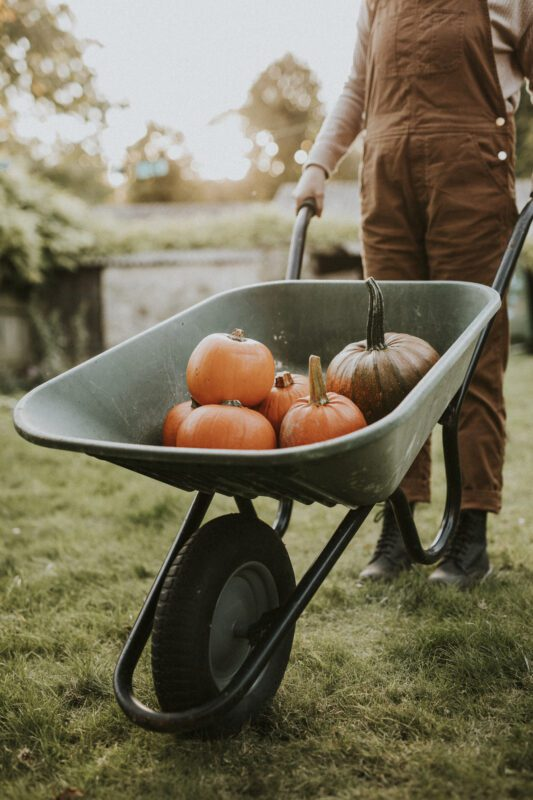

Nova varjena 80L samokolnica Dimet: Zgrajena za resno delo
Močna, varjena in prostorna – idealna za gradbišča, kmetije in delavnice
Samokolnica DMT 80L je zasnovana za zahtevne uporabnike, ki potrebujejo robustnost, stabilnost in dolgotrajno zanesljivost. Izdelana in sestavljena je v Kranju, v naših prostorih nekdanje Kmetijske strojne zadruge, kjer ročno skrbimo za vsako varjenje in sestavo.
Idealna za težka okolja
S svojo varjeno konstrukcijo, kovinskim platiščem, robustnim ogrodjem in premišljeno porazdelitvijo teže na kolesu je ta model primeren tako za:
- gradbišča (pesek, malta, gradbeni odpad),
- kmetijska opravila (gnoj, sadje, krma),
- kot tudi za industrijsko rabo.
Tehnične lastnosti samokolnice DMT
| Lastnost | Podatek |
|---|---|
| Tip | DMT 80 L, varjena |
| Korito | Jeklena pločevina, 0.8 mm (nebarvana), 0.9 mm (barvana) |
| Prostornina | 80 litrov / nosilnost do 130 kg |
| Barva | Zelena, prašno plastificirana |
| Težišče | Poravnano na kolo za optimalno razbremenitev uporabnika |
| Pnevmatika | 3.50-8 |
| Platišče | 2.50-8, fi 12 × 100, kovinsko, zeleno, prašno barvano |
| Ogrodje | Jeklena cev Ø 32 mm |
| Nosilec kolesa | Pravokotni profil, 4 mm |
| Ročaji | Gumeni ali PVC, proti-zdrsni |
Kaj pomeni »varjena konstrukcija«?
Namesto da bi deli bili povezani z vijaki (kar lahko z leti popusti), je ta samokolnica polno zvarjena – kar pomeni:
- večja togost,
- manj vibracij pri uporabi,
- daljša življenjska doba,
- nič več razrahljanih spojev.
Prikaz uporabe

Slika je simbolična.Sestavljeno pri nas – testirano za teren
Vsaka samokolnica je pred dostavo sestavljena in pregledana v naši delavnici. To zagotavlja, da dobite izdelek, pripravljen na takojšnjo uporabo, brez dodatne montaže ali presenečenj.
Naroči svojo DMT 80L samokolnico zdaj
Dobava iz lastne zaloge, običajno v 1–2 delovnih dneh.
Možen je tudi osebni prevzem v Kranju.
Imaš vprašanje?
Piši nam na info@dimet.si ali obiščite stran Kontakt.